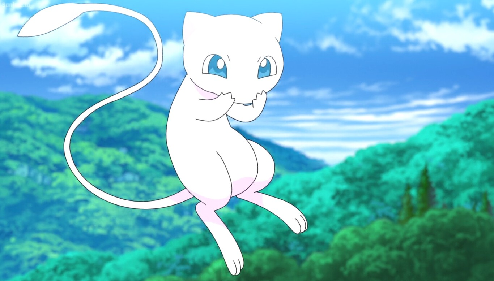
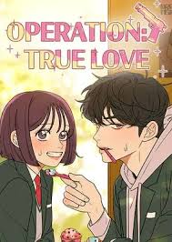
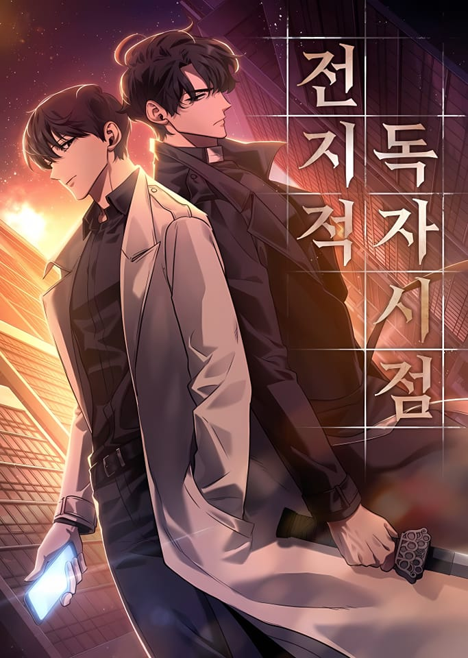

Bienvenido a mi Blog
En este blog compartiré un poco sobre mis gustos, mis experiencias, pensamientos y reflexiones sobre diversos temas.
En este blog compartiré un poco sobre mis gustos, mis experiencias, pensamientos y reflexiones sobre diversos temas.
Soy Nicole Torres. Vivo en Lima. Estudio Comunicación Audiovisual Multimedia. Me apasiona cantar, escuchar musica, leer comics web, ver peliculas y series.
Uno de los personajes que más me gusta es cinnamon roll de sanrio.

Otro de mis personajes favoritos es el pokemon legendario Mew.
Es un manhwa coreano de género romance y drama, aún sigue en emisión.
Este comic es de género fantasia y acción, aún sigue en emisión en español. A finales del 2023 se anunció que seria convertido en una serie.
Puedes contactarme a través de mis redes sociales.
IG: @nicoleatg